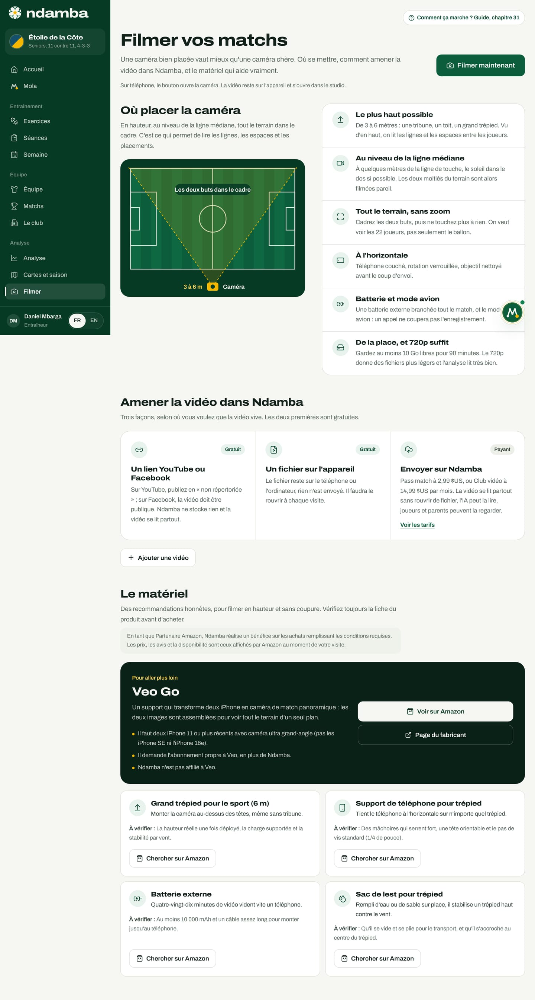
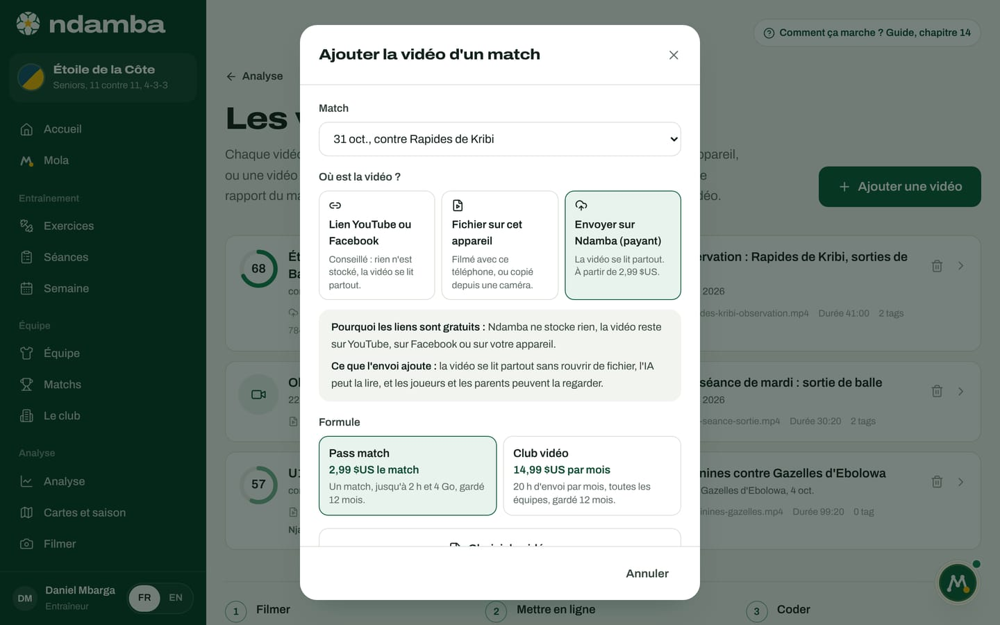
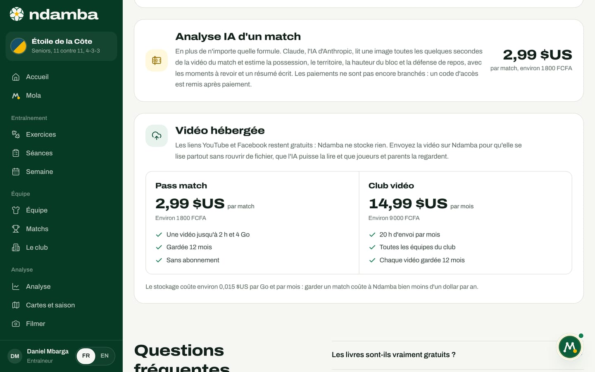

Filmer et héberger : caméra, liens, envoi payant
La page Filmer vos matchs : où placer la caméra, les trois façons d’amener une vidéo dans Ndamba (un lien YouTube ou Facebook, un fichier sur l’appareil, l’envoi payant sur Ndamba), le Pass match et le Club vidéo, ce que coûte vraiment le stockage, l’état d’aujourd’hui (une démonstration), et le matériel conseillé, de la Veo Go au simple trépied.
11 min de lecture
Toute l’analyse de Ndamba commence par une vidéo. Pas une vidéo de télévision : celle d’un téléphone posé en hauteur, au bord d’un terrain en terre ou en herbe synthétique, tenu par un parent, un joueur blessé ou un adjoint. Une bonne vidéo de match ne dépend pas d’une caméra chère ; elle dépend de l’endroit où l’on se met. Ce chapitre ouvre la page Filmer vos matchs, explique les trois façons de donner la vidéo à Ndamba, dont la nouvelle, payante, qui l’héberge sur Ndamba, et termine par le matériel qui aide vraiment.
La page Filmer vos matchs
Dans le menu, groupe Analyse, touchez Filmer (adresse /app/filmer). Sur téléphone, elle est dans le panneau Plus. Le sous-titre donne le ton : « Une caméra bien placée vaut mieux qu’une caméra chère. Où se mettre, comment amener la vidéo dans Ndamba, et le matériel qui aide vraiment. »


En haut, le bouton Filmer maintenant. « Sur téléphone, le bouton ouvre la caméra. La vidéo reste sur l’appareil et s’ouvre dans le studio. » Le match filmé devient une vidéo nommée « Match filmé le » suivi de la date, liée à l’équipe active, et le studio s’ouvre dessus pour coder (chapitre 29). Sur un ordinateur, le même bouton ouvre le choix d’un fichier vidéo.
Où placer la caméra
Le schéma Où placer la caméra montre le terrain vu de haut, la caméra au bord, au niveau de la ligne médiane, avec deux repères : 3 à 6 m de hauteur et Les deux buts dans le cadre. « En hauteur, au niveau de la ligne médiane, tout le terrain dans le cadre. C’est ce qui permet de lire les lignes, les espaces et les placements. »
Six conseils suivent :
| Conseil | Ce qu’il faut faire |
|---|---|
| Le plus haut possible | De 3 à 6 mètres : une tribune, un toit, un grand trépied. Vu d’en haut, on lit les lignes et les espaces entre les joueurs. |
| Au niveau de la ligne médiane | À quelques mètres de la ligne de touche, le soleil dans le dos si possible. Les deux moitiés du terrain sont alors filmées pareil. |
| Tout le terrain, sans zoom | Cadrez les deux buts, puis ne touchez plus à rien. On veut voir les 22 joueurs, pas seulement le ballon. |
| À l’horizontale | Téléphone couché, rotation verrouillée, objectif nettoyé avant le coup d’envoi. |
| Batterie et mode avion | Une batterie externe branchée tout le match, et le mode avion : un appel ne coupera pas l’enregistrement. |
| De la place, et 720p suffit | Gardez au moins 10 Go libres pour 90 minutes. Le 720p donne des fichiers plus légers et l’analyse lit très bien. |
Pourquoi tant d’insistance sur la hauteur et le plan fixe ? Parce que le codage, les cartes et l’analyse IA lisent des espaces : la distance entre deux lignes, le côté où le bloc a été attiré, le nombre de joueurs derrière le ballon. Une caméra au niveau du sol, ou qui suit le ballon en zoomant, montre le porteur et cache le reste. Ne changez pas de place à la mi-temps : les équipes changent de côté, pas la caméra (chapitre 12).
Trois façons d’amener la vidéo dans Ndamba
Le bloc Amener la vidéo dans Ndamba le résume : « Trois façons, selon où vous voulez que la vidéo vive. Les deux premières sont gratuites. »
| Un lien YouTube ou Facebook | Un fichier sur l’appareil | Envoyer sur Ndamba | |
|---|---|---|---|
| Prix | Gratuit | Gratuit | Payant, à partir de 2,99 $US |
| Où vit la vidéo | Sur YouTube (« non répertoriée ») ou sur Facebook (publique) | Sur le téléphone ou l’ordinateur | Sur Ndamba |
| À chaque visite | Rien à faire, elle se lit partout | Il faut rouvrir le fichier | Rien à faire, elle se lit partout |
| Dessin, zoom, image par image, export d’un clip | Non | Oui | Oui |
| Analyse IA | Avec le fichier d’origine | Oui | Oui |
| Ce que Ndamba stocke | Le lien, rien d’autre | Rien | La vidéo |
Sous les trois cartes, Voir les tarifs ouvre la section d’hébergement de la page Premium et Ajouter une vidéo ouvre la fenêtre d’ajout.
Un lien YouTube ou Facebook. C’est la voie conseillée quand internet le permet. Sur YouTube, publiez la vidéo en « non répertoriée » (seuls ceux qui ont le lien la voient), jamais en « privée », et laissez l’intégration autorisée. Sur Facebook, la vidéo doit être publique. Ndamba ne garde que le lien (chapitre 12).
Un fichier sur l’appareil. Sans internet, ou pour aller vite après le match : la vidéo que le téléphone vient d’enregistrer, ou celle copiée depuis une caméra. Le fichier n’est jamais envoyé, et Ndamba ne le garde pas : à chaque visite, le studio demande de le rouvrir, et vos codes et vos clips se replacent au bon moment (chapitre 14).
Envoyer sur Ndamba. La troisième voie, payante, répond aux limites des deux autres : la vidéo se lit partout sans rouvrir de fichier, l’analyse IA peut la lire directement, et les joueurs et les parents pourront regarder leurs extraits.
Envoyer une vidéo sur Ndamba


- Ouvrez la fenêtre Ajouter la vidéo d’un match : depuis Analyse, Les vidéos des matchs, la vidéothèque du club ou Ajouter une vidéo sur la page Filmer vos matchs. Choisissez le Match.
- Sous Où est la vidéo ?, choisissez Envoyer sur Ndamba (payant) : « La vidéo se lit partout. À partir de 2,99 $US. »
- La fenêtre explique le choix en deux lignes. Pourquoi les liens sont gratuits : « Ndamba ne stocke rien, la vidéo reste sur YouTube, sur Facebook ou sur votre appareil. » Ce que l’envoi ajoute : « la vidéo se lit partout sans rouvrir de fichier, l’IA peut la lire, et les joueurs et les parents peuvent la regarder. »
- Choisissez la Formule : Pass match ou Club vidéo (ci-dessous).
- Touchez Choisir la vidéo. Ndamba lit la taille et la durée du fichier sur l’appareil, sans rien envoyer (« Lecture du fichier »), puis affiche le nom, la taille et la durée.
- Un récapitulatif donne ce qu’il faut payer : pour un Pass match, « À payer pour ce match » et « Environ 1 800 FCFA, une seule fois. » ; pour le Club vidéo, les heures utilisées ce mois-ci avec cette vidéo sur les 20 heures. Puis ce qui est compris : Gardée jusqu’au une date douze mois plus tard, Se lit sur tous les appareils, sans rouvrir de fichier, Lisible par l’analyse IA, et selon la formule Joueurs et parents peuvent regarder leurs extraits ou Pour toutes les équipes du club.
- Touchez Envoyer (démonstration). Une barre montre Envoi en cours, puis Vidéo prête, et la ligne « démonstration : rien n’a été envoyé ni facturé ».
Les limites sont vérifiées avant l’envoi. Un fichier de plus de 4 Go ou de plus de 2 heures ne passe pas avec le Pass match : « Choisissez Club vidéo, ou exportez la vidéo en 720p. » Avec le Club vidéo, une vidéo qui dépasserait les 20 heures du mois est refusée.
Les deux formules d’hébergement
| Pass match | Club vidéo | |
|---|---|---|
| Prix proposé | 2,99 $US le match (environ 1 800 FCFA) | 14,99 $US par mois (environ 9 000 FCFA) |
| Ce qu’il couvre | Une vidéo jusqu’à 2 h et 4 Go | 20 h d’envoi par mois |
| Pour qui | Une équipe, un match important | Toutes les équipes du club |
| Durée de garde | 12 mois | 12 mois pour chaque vidéo |
| Engagement | Sans abonnement | Par mois |


La page Premium reprend ces deux formules dans sa section Vidéo hébergée, après l’analyse IA : « Les liens YouTube et Facebook restent gratuits : Ndamba ne stocke rien. Envoyez la vidéo sur Ndamba pour qu’elle se lise partout sans rouvrir de fichier, que l’IA puisse la lire et que joueurs et parents la regardent. » Ces prix sont des propositions, à confirmer avec les clubs pilotes.
Ce que coûte vraiment le stockage
La page Premium l’écrit en une phrase : « Le stockage coûte environ 0,015 US$ par Go et par mois : garder un match coûte à Ndamba bien moins d’un dollar par an. » Le calcul, noté dans la configuration de l’application, est simple. Un stockage d’objets comme Cloudflare R2 coûte environ 0,015 $US par gigaoctet et par mois, sans frais de sortie quand la vidéo est regardée. Un match de 90 minutes en 720p pèse environ 2 Go : le garder un an coûte à peu près 0,36 $US. Un fichier de 4 Go, la limite du Pass match, à peu près 0,72 $US.
Le prix ne paie donc pas seulement le stockage. Il couvre l’envoi, la lecture sur tous les appareils, la gestion des droits et la marge qui permet de garder gratuits les livres, les exercices et les liens. C’est aussi pour cela que les liens restent gratuits : ils ne coûtent rien à Ndamba.
Aujourd’hui : une démonstration
Il faut le dire aussi clairement que l’application : aujourd’hui, rien n’est envoyé et rien n’est facturé. Le parcours d’envoi est complet à l’écran, mais il tourne en démonstration :
- le fichier reste sur l’appareil, et la vidéo « envoyée » se lit pendant la session du navigateur seulement ;
- aucun paiement n’a lieu ;
- la vidéo de la démo club pro, marquée Hébergée sur Ndamba et démonstration dans le studio, est une animation servie par le site de Ndamba, pas une vidéo envoyée par un club.
Pour que l’envoi devienne réel, le propriétaire du site doit brancher un stockage. Le serveur de Ndamba répond pour l’instant que le stockage n’est pas configuré. Il attend trois variables, réglées par le propriétaire dans l’hébergement et jamais dans le code : VIDEO_STORAGE (l’adresse du stockage, compatible S3, par exemple Cloudflare R2), VIDEO_STORAGE_KEY_ID et VIDEO_STORAGE_SECRET. Même avec ces variables, le circuit d’envoi réel reste à écrire : le serveur vérifiera le paiement et les limites, donnera au navigateur une adresse d’envoi temporaire pour que la vidéo parte directement vers le stockage, notera la date d’expiration à douze mois, et ne donnera la lecture qu’aux membres du club qui en ont le droit. C’est une étape de la feuille de route (chapitre 26), avec les comptes et les paiements.
Le matériel
La section Le matériel commence par une promesse : « Des recommandations honnêtes, pour filmer en hauteur et sans coupure. Vérifiez toujours la fiche du produit avant d’acheter. »
Veo Go, pour aller plus loin. Une carte sombre présente la Veo Go : « Un support qui transforme deux iPhone en caméra de match panoramique : les deux images sont assemblées pour voir tout le terrain d’un seul plan. » Trois précisions l’accompagnent, à lire avant d’acheter :
- « Il faut deux iPhone 11 ou plus récents avec caméra ultra grand-angle (pas les iPhone SE ni l’iPhone 16e). »
- « Il demande l’abonnement propre à Veo, en plus de Ndamba. »
- « Ndamba n’est pas affilié à Veo. »
Deux boutons : Voir sur Amazon et Page du fabricant. La vidéo panoramique produite par ce système s’amène dans Ndamba comme les autres, par un lien ou un fichier.
Quatre accessoires simples. Chacun a une carte avec à quoi il sert et À vérifier avant d’acheter, puis un bouton Chercher sur Amazon, qui ouvre une recherche et non un produit précis :
| Accessoire | À quoi il sert | À vérifier |
|---|---|---|
| Grand trépied pour le sport (6 m) | Monter la caméra au-dessus des têtes, même sans tribune | La hauteur réelle une fois déployé, la charge supportée et la stabilité par vent |
| Support de téléphone pour trépied | Tenir le téléphone à l’horizontale sur n’importe quel trépied | Des mâchoires qui serrent fort, une tête orientable et le pas de vis standard (1/4 de pouce) |
| Batterie externe | Tenir 90 minutes de vidéo | Au moins 10 000 mAh et un câble assez long pour monter jusqu’au téléphone |
| Sac de lest pour trépied | Stabiliser un trépied haut contre le vent, rempli d’eau ou de sable sur place | Qu’il se vide et se plie pour le transport, et qu’il s’accroche au centre du trépied |
Ce guide ne donne ni prix ni avis pour ces produits : ils changent, et la page non plus n’en affiche pas. « Les prix, les avis et la disponibilité sont ceux affichés par Amazon au moment de votre visite. »
La mention Partenaire Amazon. Les liens Amazon de la page portent l’identifiant du programme Partenaires d’Amazon, et la page l’écrit avant le premier lien, sous le titre du matériel : « En tant que Partenaire Amazon, Ndamba réalise un bénéfice sur les achats remplissant les conditions requises. » Le prix payé par l’acheteur ne change pas. C’est une petite source de revenu, pas un critère de choix : les conseils de placement valent avec n’importe quel téléphone et n’importe quel trépied.